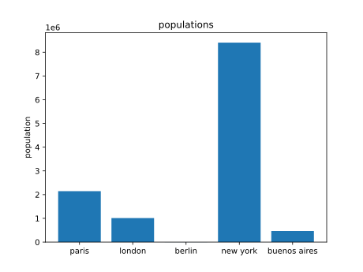

method
- I want every datapoint to be referenced / sourced
- I want every piece of code necessary to produce the artifact to be published
- meaning, including automatic datafetching of the source data if possible
- and including every calcuation necessary to produce the output from the input
- I want extremely clear differentiation between what is
- verified, external data
- produced in a verifiable way as part of the project
- assumed by the project to make the calculation possible
- and I would love it if the artifact like the pdf was verifiable / hashed as well.
example content - city populations
ok, the numbers are slightly wrong because wikidata is annoying.
ACTUALLY
It's even better with a mistake, because that way you can go there, follow the source and find the mistake.
the problem is that wikidata population numbers are actually a time series and there is no default sorting putting the newest at the top.

sources
data
wikidata
used software
weasyprint for pdf creation
code
the calculations.py in this repo
dependencies
python
self written wikidata fetching module
https://github.com/bmaxv/simplewikidata
matplotlib